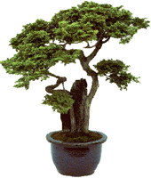

|
Aggiornata sezione NEWS!!
Introduzione…
|
|
|
|
Finalmente è giunta anche in Italia la moda che sta conquistando
il mondo. I gatti in bottiglia. I gatti bonsai. Animali plasmati a nostro
piacere. Per secoli gli occidentali hanno fantasticato pensando alle pregevoli
produzioni dell'arte orientale. Dal giardinaggio ai tatuaggi, dalla danza
alle arti marziali. La perfezione. Movimenti e forme sinuose. Forse la più
affascinante delle tecniche visuali nata da questa cultura è l'arte orientale
delle miniature. Chi non è rimasto sbalordito, a bocca aperta, davanti ad
un bonsai giapponese? I bonsai sono superati. Ormai sono disponibili a poco
prezzo in tutto il mondo. Con un occhio al passato, alla tradizione, e uno
al futuro, all'innovazione, siamo orgogliosi di essere riusciti a portare
anche in Italia la versione vivente, animale, di questa forma d'arte: il
gatto bonsai.
|
|
|

|
Principi di base…
|
|
|
Piante bonsai e curatissimi giardini orientali miniaturizzati,
raggiungono la loro forma migliore dopo anni e anni di cure e dopo un
lungo e difficile processo di potatura durante la crescita delle piante
stesse. Ovviamente non è possibile potare un gatto. Ci abbiamo provato.
Non è stato piacevole. Soprattutto per il gatto. In ogni caso, i geniali
artisti orientali, hanno trovato una tecnica per modificare la forma dell'animale
mantenendolo in vita. Sia la fasciatura dei piedi che della testa furono
praticate nel lontano oriente, con lo scopo di miniaturizzare le suddette
parti del corpo del felino. Questa tecnica è alla base del nuovo metodo,
detto "del corsetto", che sta diventando sempre più famosa in questi anni.
Forzando fisicamente la crescita di una forma di vita si può fargli acquisire
la forma del vaso che la contiene. Questo crea forme di vita uniche. Non
sarete più obbligati ad avere per casa il solito, noiosissimo gatto che
gira per casa. Avrete un animale unico, diverso da tutti gli altri. L'unico
limite è la tua immaginazione. Se puoi immaginarlo puoi farlo.
Curioso? Leggi le nostre
F.A.Q.
Cerchi
lavoro?
webmaster@gattibonsai.com
|
|
|